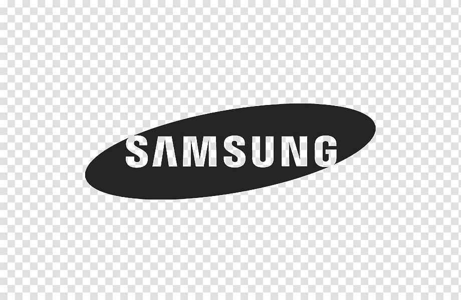

Architecting complex production workflows and directing character-driven media from concept through delivery.
Engineering complex content pipelines for high-conversion social and digital environments.


Kelly Sallaway
Emmy Award-Winning Producer
"He brought a delayed project on schedule, then helped us to save thousands on licensing! I want him on every production!"

Ryan Henry Johnston
Multi-Award-Winning Director
"He’s invaluable because he’s calm under pressure. When everyone else is hyperventilating... he stays calm, has already analyzed the situation and is providing courses of action."

Collin O'Brien is an Emmy Award-Winning Technical Producer and Director based in Los Angeles. He specializes in bridging the gap between creative vision and technical execution.
With a proven track record spanning narrative shorts, commercial campaigns, and large-scale logistical operations, his focus is on building resilient production pipelines that allow powerful storytelling to thrive.
Available for technical consultation and directing roles.